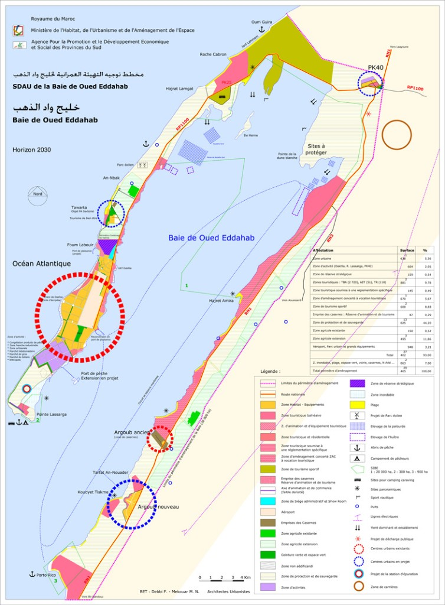
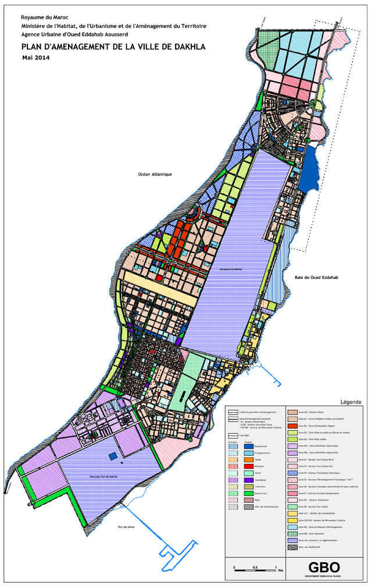
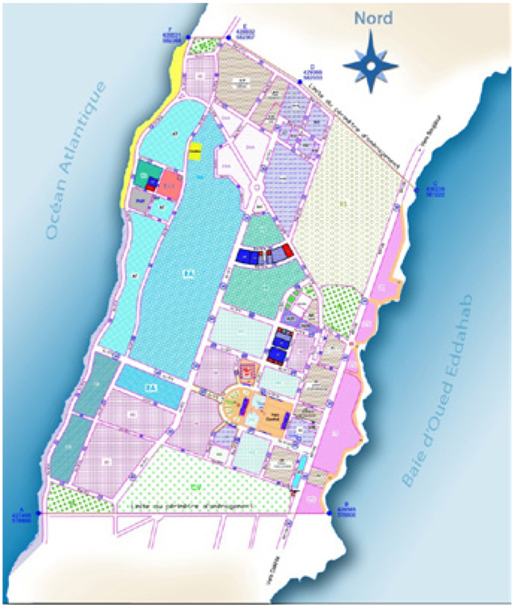
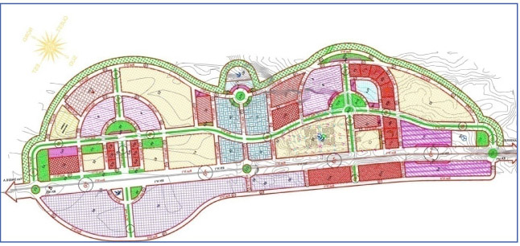
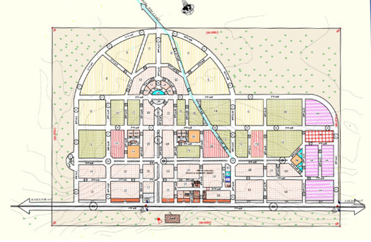

Documents d’urbanisme — recherche
Filtrez par commune ou par type de document. Les notices détaillées se trouvent dans la suite de cette page.
Aucun document ne correspond à votre recherche.
Pour publier des PDF : placez les fichiers dans assets/docs-urbanisme/ puis renseignez le champ pdf dans assets/js/docs-urbanisme-catalog.js. En attendant, le lien « Télécharger » ouvre une demande par e-mail.
Contenu conforme à la rubrique « Documents d’urbanisme » du site de l’Agence (audakhla.ma). Ancres utiles : zone touristique PK26–PK36, Imoutlane et Labouirda (équivalents locaux aux liens profonds du site historique).
Les S.D.A.U
Le Schéma Directeur d’Aménagement Urbain de la Baie d’Oued Eddahab
Le Schéma Directeur d’Aménagement Urbain de la Baie d’Oued Eddahab fixe les orientations stratégiques de développement et d’aménagement urbain à l’horizon 2030 sur le territoire couvrant le périmètre urbain de la ville de Dakhla, l’ensemble de la péninsule et les rivages de la baie, intégrant également le centre d’El Argoub (soit une superficie totale d’environ 400 km²).
La mise en œuvre du S.D.A.U se traduit par la recherche d’un équilibre entre plusieurs impératifs, à savoir :
- Ouvrir à l’urbanisation de nouveaux secteurs pour répondre aux besoins de la croissance, dans les domaines du logement, des équipements, des activités et des loisirs ;
- Faciliter et orienter l’investissement dans les secteurs productifs, notamment la pêche, le tourisme et l’agriculture, pour la création d’emplois et de richesse ;
- Préserver l’environnement de la Baie d’Oued – Eddahab.
L’année 2015 a été marquée par l’homologation du SDAU de la Baie d’Oued Eddahab, publiée au BO n° 6409 du 02/11/2015, par le décret n° 2.15.230 du 16 octobre 2015.

Les plans d’aménagements
Le Plan d’Aménagement de la ville de Dakhla
Le Plan d’Aménagement de la ville de Dakhla : l’Agence Urbaine Oued Eddahab Aousserd a lancé la mise à jour et le suivi du plan d’aménagement en privilégiant une vision globale et durable qui consiste à :
- Augmenter l’attractivité de la ville ;
- Doter la ville de plusieurs centralités au sein de la ville ;
- Créer l’homogénéité entre les différentes composantes esthétiques du tissu urbain ;
- Renforcer les articulations sociales ;
- Allier densité architecturale et perspectives de l’aménagement urbain ;
- Participer à l’harmonisation du paysage urbain ;
- Instaurer un urbanisme identitaire respectueux de l’environnement.
Sur la base de la photo aérienne et de la restitution de la ville de Dakhla mises à jour, le plan d’aménagement a été élaboré à l’échelle 1/2000e et a été instruit par une commission technique au siège de l’Agence Urbaine d’Oued Eddahab – Aousserd le 26/06/2014.

Le Plan d’Aménagement de la Zone touristique située entre le PK26 et le PK36
La zone d’étude se trouve sur la Baie d’Oued Eddahab entre le PK26 et le PK36 sur le territoire de la Commune Rurale d’Al Argoub, Province d’Oued Eddahab, d’une superficie approximative de 6 322 ha. Selon le S.D.A.U de la Baie d’Oued Eddahab, cette zone est dédiée au tourisme sportif et balnéaire.
Le but du Plan d’Aménagement de ce site veillera à :
- La mise en œuvre et la concrétisation des options et orientations du S.D.A.U ;
- L’affectation des différentes zones suivant leurs usages principaux et la définition des zones dans lesquelles toute construction est interdite (zone à risque, zones inondables, etc.) ;
- La maîtrise du processus d’urbanisation au niveau de la zone ;
- La mise en place d’une plateforme référentielle en matière d’orientation et de gestion des investissements touristiques sur le site ;
- La définition d’un programme des équipements nécessaires de base pour accompagner le développement souhaité ;
- L’harmonisation du paysage urbain en préservant et en valorisant les atouts environnementaux de la zone et en garantissant l’équilibre écologique ;
- La définition d’une plateforme référentielle juridique permettant de réglementer les interventions actuelles et maîtriser les actions futures des différents opérateurs pour faciliter ainsi la gestion de l’espace ;
- La définition des règles d’utilisation du sol et les aménagements à prévoir sur cette zone.
Les deux variantes d’aménagement à l’échelle 1/5000e ont été examinées lors d’une réunion présidée par Monsieur le Wali de la Région d’Oued Eddahab-Lagouira le 30 déc. 2014. Le BET a été invité à passer à l’élaboration du PA à l’échelle 1/2000e en prenant en considération les orientations et les remarques soulevées à ce sujet.
Le Plan d’Aménagement du Centre d’Aousserd
L’actualisation du plan d’aménagement du centre d’Aousserd, homologué en 2001, a pour but de valoriser les potentialités et les ressources de ce centre en prenant en considération ses spécificités locales, naturelles, historiques et culturelles.
Les contraintes naturelles telles que les inondations, les tempêtes de sable et la pénurie de l’eau seront maîtrisées à travers des propositions et perspectives accompagnées d’un ensemble de programmes opérationnels sur le court, moyen et long terme.
Pour l’élaboration de ce nouveau plan d’aménagement, l’A.U.O.E.A se basera sur les résultats des différentes concertations avec ses partenaires locaux pour relever les dysfonctionnements liés à la gestion urbaine de la commune d’Aousserd durant la dernière décennie, ainsi que sur les études menées sur ce territoire, notamment l’étude relative à la protection du centre d’Aousserd contre les inondations et le Plan Communal de Développement de cette commune.
Le plan d’aménagement de la rive Est de la Baie d’Oued Eddahab et l’actualisation du plan d’aménagement du centre d’Al Argoub
Dans le cadre de la poursuite de la mise en œuvre de la convention de partenariat signée entre l’Agence Urbaine et ses partenaires locaux, lors de la 4e édition de son conseil d’administration tenu le 25 mai 2012, qui vise la couverture de la Baie d’Oued – Eddahab par une nouvelle génération de documents d’urbanisme, l’Agence Urbaine d’Oued Eddahab Aousserd a lancé en 2014 une étude d’élaboration du plan d’aménagement de la Rive Est qui couvre une superficie de 5 500 ha et l’actualisation du plan d’aménagement d’Al Argoub homologué en 2003 et qui couvre une superficie de 530 ha.
Les principaux objectifs visés par cette étude peuvent être résumés comme suit :
- Poursuivre la mise en œuvre des orientations majeures du SDAU ;
- Concevoir un nouveau plan d’aménagement du centre d’Al Argoub en se basant sur des nouveaux concepts qui tiennent compte de l’enjeu du développement durable ;
- Asseoir une plateforme référentielle en matière d’orientation et de gestion des investissements touristiques le long de la Rive Est de la baie ;
- Maîtriser le processus d’urbanisation en gestation le long de la baie (côté Est) ;
- Conforter les potentialités touristiques et paysagères de la côte de la baie ;
- Préserver les qualités environnementales et paysagères de la baie.
Plan d’aménagement du centre de Bir Guandouz
- La situation géographique du centre de Bir Guandouz représente le principal atout qui a incité l’Agence Urbaine à engager la couverture dudit centre par un plan d’aménagement.
- En effet, sa localisation sur la route nationale n° 1, à 13 km de la façade maritime et du village de pêche Lamhiriz, ainsi que sa proximité des frontières avec la Mauritanie, présentent des potentialités indéniables pour son développement.
- Ledit instrument a pour objet de définir les conditions d’utilisation du sol en prévoyant la destination des différents espaces (zone d’habitat, industrielle, commerciale, touristique, etc.), en définissant les règles de construction et en imposant les servitudes nécessaires pour assurer la qualité du paysage urbain.
- Il est à préciser que ce document est homologué par décret n° 2.10.377 du 6 septembre 2010.
- Parallèlement, la délimitation dudit centre afin de l’ériger en centre délimité, en application des dispositions législatives et réglementaires en vigueur, est en phase des visas des départements ministériels concernés.
Le Plan d’Aménagement du Centre de Tawarta
Le Plan d’aménagement du centre périphérique de Tawarta est le fruit des efforts entrepris par l’Agence Urbaine en collaboration avec l’ensemble de ses partenaires locaux pour asseoir un cadre juridique pour l’encadrement du développement urbanistique de ce noyau urbain et l’encouragement de l’investissement afin de répondre à l’attente de la population locale.
Le plan d’aménagement de Tawarta a été élaboré en se basant sur les éléments suivants :
- Les orientations du S.D.A.U qui préconisent un plan d’aménagement sectoriel au niveau de Tawarta ;
- L’étude de développement et d’aménagement d’un noyau urbain à proximité de la ville de Dakhla sur le site de Tawarta, qui a démontré l’importance des potentialités naturelles agricoles et touristiques du site ;
- La création d’un noyau urbain qui peut à la fois diminuer la pression sur la ville de Dakhla et constituer un espace de repos et de détente pour la population riveraine.
Le Plan d’aménagement du centre périphérique de Tawarta a été homologué et publié au bulletin officiel n° 2663 du 20 rejeb 1435 (20 mai 2014).
Les P.D.A.R
Le P.D.A.R du centre de Bir Anzarane
Le plan de développement du centre de Bir Anzarane, en cours d’homologation, s’inscrit dans le cadre de la généralisation en documents d’urbanisme des centres chefs-lieux des communes. Ce document qui couvre une superficie d’environ 250 ha définit le droit d’utilisation des sols et vise notamment à :
- Développer les capacités du centre pour attirer à la fois la population et les investisseurs ;
- Doter la région d’une assiette foncière favorisant les investissements publics ;
- Disposer d’une base de programmation des équipements publics ;
- Créer une complémentarité fonctionnelle entre le centre chef-lieu de la commune de Bir Anzarane et le village de pêche d’Imoutlane situé à proximité dudit centre ;
- Ériger le centre en un véritable pôle de développement socio-économique ;
- Encourager la fixation des marins-pêcheurs par la création de structures d’accueil et de centres de service.
Et pour atteindre ces objectifs, le plan de développement réserve :
- 72 ha pour les habitations ;
- 9 ha pour les équipements ;
- 8 ha pour les activités.
En outre, d’importantes surfaces ont été réservées à la détente, à l’attraction et aux espaces verts.
Le Plan d’Aménagement de Bir Anzarane a été homologué et publié au BO n° 6347 du 30 mars 2015.
Le P.D.A.R du centre d’Imlili
L’établissement du Plan de Développement du centre d’Imlili vient de l’intérêt qu’accorde l’AUOEA à la généralisation de la couverture des centres chefs-lieux des communes par des documents d’urbanisme, en vue de rétablir un équilibre homogène entre les différentes composantes urbaines au niveau de son ressort territorial. Ce document qui couvre une superficie d’environ 145 ha définit le droit d’utilisation des sols et vise notamment à :
- Établir un équilibre entre le centre et le village de pêcheurs Labouirda dans une vision de développement intégré ;
- Renforcer la fonction centrale du centre à l’échelle communale ;
- Donner au centre les moyens susceptibles d’élever son attractivité et son niveau de compétitivité en vue de le qualifier pour jouer un rôle plus dynamique au sein de l’espace communal voire provincial et régional ;
- Orienter et maîtriser l’extension urbaine du centre ;
- Augmenter la capacité d’accueil du centre pour faire face aux flux migratoires.
Le Plan de Développement du centre d’Imlili a été homologué et publié au BO n° 6347 du 30 mars 2015.
Les P.D.A.R des villages de pêche de N’Tireft, d’Ain Bida et de Lamhiriz
Dans le cadre de la mise en œuvre de l’étude relative à l’identification et le développement des centres émergents de la Région d’Oued Eddahab-Lagouira, qui a mis en valeur les potentialités halieutiques et touristiques des villages de pêche le long du littoral atlantique et qui doivent être mises à profit pour le développement des communes rurales avoisinantes situées sur la RN1, l’A.U.O.E.A a initié l’élaboration de trois PDAR des villages de pêche de N’Tireft, Ain Bida et Lamhiriz. L’objectif est d’assurer un développement équitable et harmonieux de ces villages de pêche en symbiose avec les centres avoisinants pour faire de ces sites des micro-pôles de développement local et régional intégrés, capables de participer de manière plus significative au développement socio-économique de toute la Région d’Oued Eddahab – Lagouira.
- Pour le PDAR de N’Tireft : une variante a été choisie entre deux variantes proposées par le BET adjudicataire de cette étude lors d’une réunion présidée par Monsieur le Wali de la région d’Oued Eddahab-Lagouira le 30 déc. 2014. La commission a insisté sur l’importance de l’orientation du développement urbain vers le sud, en raison de l’implantation du futur port atlantique prévu au sud dudit village.
- Pour le PDAR d’Ain Bida : cette étude reste en sa première phase relative à l’élaboration du rapport diagnostic et le projet du plan de développement à l’échelle 1/5000e.
- Pour le PDAR de Lamhiriz : le contrat a été résilié avec le BET adjudicataire de ce marché vu le non-respect des clauses du CPS par le bureau d’études, et vu la qualité du livrable.
Plan de développement des villages de pêche d’Imoutlane et Labouirda
L’AUOEA a lancé, en 2014, une étude pour l’élaboration des plans de développement des deux villages de pêche Imoutlane et Labouirda situés respectivement sur le territoire des communes rurales de Bir Anzarane et Imlili. Le but est la poursuite de la couverture des centres émergents identifiés au niveau régional pour orienter et accompagner le développement au niveau de ces centres, qui peuvent constituer des noyaux urbains attractifs pour la population afin de dépasser le déséquilibre que connaît la région et aussi pour diminuer la pression exercée sur la ville de Dakhla.
Il est à signaler que le BET adjudicataire du marché a été désigné en décembre 2014 suite à l’appel d’offres lancé par l’AUOEA à ce sujet.



Consulter la cartographie et les documents en ligne
Portail Taamir (Karazal)